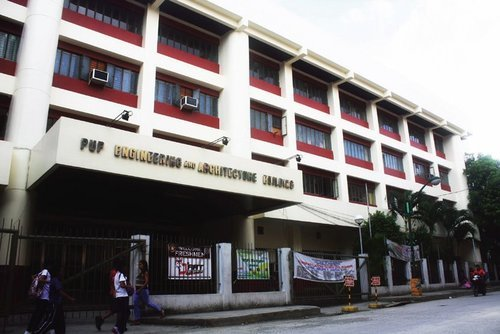

The College of Engineering is one of the constituent colleges of the University and one of the premier engineering schools in the Philippines. The College confer degrees in civil engineering, mechanical engineering, electrical engineering, electronics and communications engineering, industrial engineering, computer engineering, and railway engineering.
The College of Architecture, Design, and the Built Environment (CADBE) at PUP, established in 2000, empowers deserving students with quality education, fostering integrity and environmental awareness. It has produced globally acclaimed architects and interior designers, reflecting its dedication to excellence.